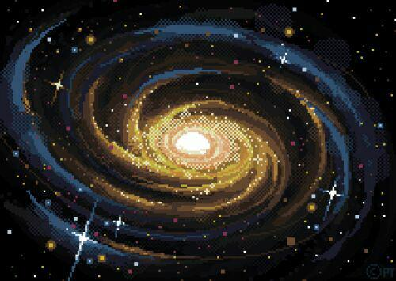

Написати сценарій вибору із трьох зображень одного, яке вставляється нижче цих трьох.
Написати сценарій картинки з "ефектом наближення", тобто збільшення розмірів як реакція на попадання курсора в поле зображення (використовувати властивості width і height).
Написати сценарій графічного горизонтального меню з появою стрілки над пунктом, на який наведено курсор.